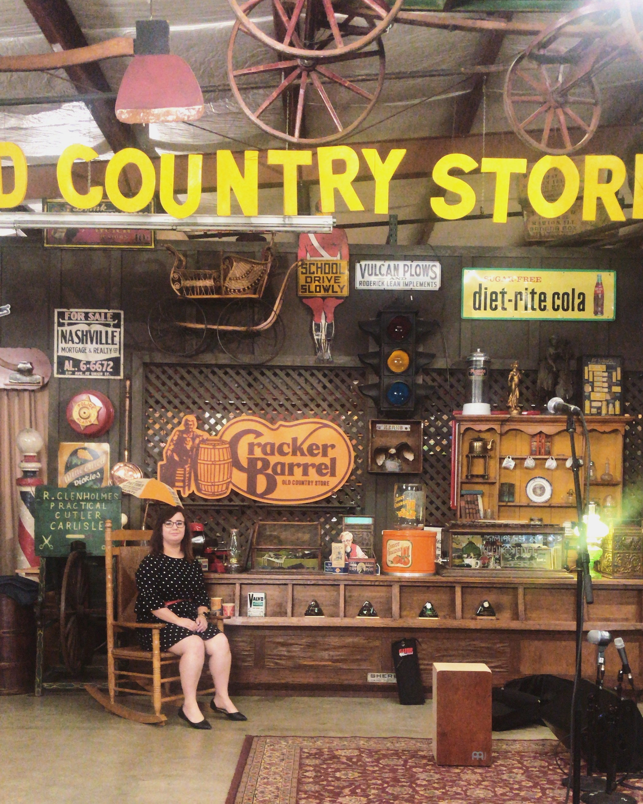

✩ The Resume of Julia Fraczek ✩

Work Experience
Cracker Barrel Home Office
Music Marketing Intern
(June 2018 – July 2018)
- 1 of 23 interns selected for 8 week summer internship at Cracker Barrel’s corporate headquarters
- Planned and executed live musical events, such as professional Facebook Live concerts
- Assisted with Cracker Barrel’s sponsoring of Nashville’s CMA Fest 2018
- Gathered and presented a collection of the company’s musical history through its founding
- Experienced behind-the-scenes aspects of planning with artists, and developed strategies to market their content.
Cracker Barrel Old Country Store
Retail Associate
(May 2017 – June 2018)
- Retained a large amount of knowledge pertaining to product, and was able to provide information and relate merchandise to our guests
- Mentored and coached coworkers to provide high levels of customer service, and to perform day-to-day tasks above satisfaction
- Managed time to perform side tasks while still maintaining satisfaction within our guests
- Worked with a cash register and POS, and processed multiple different methods of payments from guests
Cashier
Meijer
(June 2015 – August 2017)
- Verified that each customer’s needs were fulfilled, and made phone calls and answered questions if they were not satisfied
- Maintained a high quality of work at a continuously fast pace, without jeopardizing customer service and satisfaction
- Stayed up-to-date about the store’s products, ongoing sales, coupons, etc.